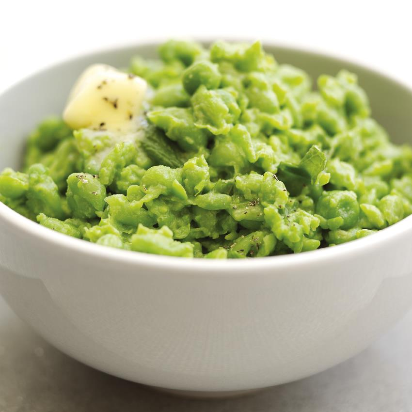

Homemade Mushy Peas

Description
Why buy store mushy peas? When you can buy store garden peas and make your own!
Ingredients
- 500g of garden peas
- 25g butter
- Black pepper
- Salt
Steps
- Pour garden peas to a shallow pan and cover with water.
- Bring this to a boil on a medium to high heat, then cover the pan and allow the pears to simmer for 3 minutes.
- Drain the peas and transfer to a bowl.
- Add butter, salt and pepper and mash until comfortable.